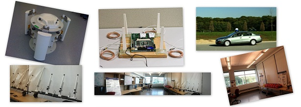

|
WINGS LAB Wireless Networking and Systems Laboratory |

 |
|
|
The Wireless Networking and Systems (WINGS) Lab was established in year 2001 and has been engaged in research in several areas of wireless networking and mobile computing systems, specifically focusing on protocol development and evaluation in the link layer and up. The students and faculty in the lab have contributed in various directions including multiple access protocols, routing protocols, transport protocols, ad hoc, mesh and sensor networking, vehicular networking, RFID networks, cellular networking and dynamic spectrum access systems.

Recent PublicationsSeyed K. Fayaz, Fatima Zarinni, and Samir Das, Ez-Channel: A distributed MAC protocol for efficient channelization in wireless networks, in Elsevier Ad Hoc Networks Journal 2015. Ayon Chakraborty, Luis Ortiz and Samir Das, Network-side Positioning of Cellular-band Devices with Minimal Effort, to appear in IEEE INFOCOM 2015. Ayon Chakraborty and Samir Das, Measurement-Augmented Spectrum Databases for White Space Spectrum, in ACM CoNEXT 2014. Fatima Zarinni, Ayon Chakraborty, Vyas Sekar, Samir Das and Phillipa Gill, A First Look at Performance in Mobile Virtual Network Operators, in ACM SIGCOMM IMC 2014. [Best Paper Award Nominee] Naved Hamedazimi, Zafar Qazi, Himanshu Gupta, Vyas Sekar, Samir Das, Himanshu Shah and Ashish Tanwer, FireFly: A Reconfigurable Wireless Datacenter Fabric using Free-space Optics, in ACM SIGCOMM 2014. |
View Larger Map |